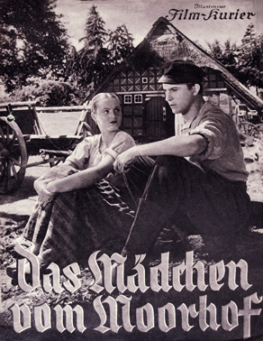
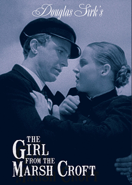
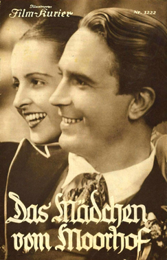

The Girl from the Marsh Croft
Hansi Knoteck
Kurt Fischer-Fehling
Eduard von Winterstein
Lina Carstens
Erwin Klietsch
Fritz Hoopts
Hans Meyer-Hanno
Klaus Pohl
SYNOPSIS
In this rural film drama, an unwed mother, shunned by her conservative community, goes to court to try to salvage her reputation.
This belongs to Sierck's long series of melodramas, a genre he was one of the indisputable masters. He made Helga a pure heroine who gave everything: she refuses that the father of her as yet unborn child swears on the Bible because she wants to save his soul, she wants to save Karsten so that he can marry Gertrud and find happiness.
The wedding scene modestly predates the grandiose scenes of the future melodramas such as the funeral in Imitation of Life (1959). It was Detlef Sierck's (Douglas Sirk) second effort in the Hitlerian years when he felt ill-at-ease (He would later call one of his films Hitler's Madman (1943) and he would give his definitive account of his vision of the Nazi madness in A Time to Love and a Time to Die (1958) .
It was adapted from the 1908 novel The Girl from the Marsh Croft by Selma Lagerlöf. It has been described as a "prototype Heimatfilm". The film's sets were designed by the art director Carl Ludwig Kirmse. Location shooting took place on the Teufelsmoor north of Bremen.
It was remade in 1958.


